| 图示 | 角色 | 体力 | 技能 |
| 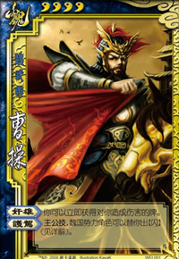 | 曹操 | 4 | 奸雄：可以立即获得造成伤害的牌。 护驾：主公技，当需要使用（或打出）一张【闪】时，可以发动护驾。所有魏势力角色按行动顺序依次选择是否打出“提供”一张【闪】，直到有一名角色或没有任何角色决定如此做时为止。 |
| 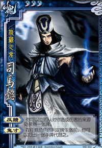 | 司马懿 | 3 | 反馈：可以立即从造成伤害的来源处获得一张牌。一次无论受到多少点伤害，只能获得一张牌，若选择手牌则从对方手里随机抽取，选择面前的装备则任选。
鬼才：在任意角色的判定牌生效前，可以打出一张手牌代替之。 |
| 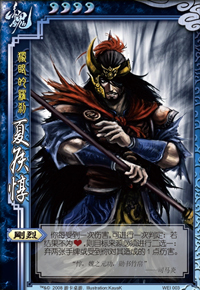 | 夏侯惇 | 4 | 刚烈：每受到一次伤害，可进行一次判定：若结果不为红桃，则目标来源必须进行二选一：弃两张手牌或受到对其造成的1点伤害。 |
| 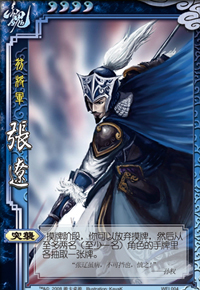 | 张辽 | 4 | 突袭：摸牌阶段，可以放弃摸牌，然后从至多两名（至少一名）角色的手牌里各抽取一张牌。 摸牌阶段，一旦发动突袭，就不能从牌堆获得牌；只剩一名其他角色时，就只能选择这一名角色；若此时其他任何人都没有手牌，就不能发动突袭。 |
| 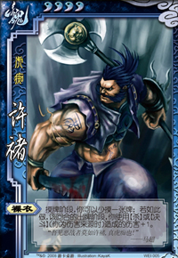 | 许褚 | 4 | 裸衣：摸牌阶段，可以少摸一张牌；若如此做，该回合的出牌阶段，使用【杀】或【决斗】（为伤害来源时）造成的伤害+1。 |
| 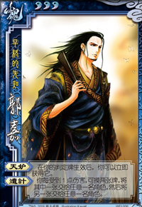 | 郭嘉 | 3 | 天妒：在判定牌生效时，可以立即获得它。判定牌生效时即判定结果决定后。
遗计：每受到1点伤害，可摸两张牌，将其中的一张交给任意一名角色，然后将另一张交给任意一名角色。 |
| 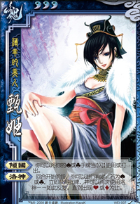 | 甄姬 | 3 | 倾国：可以将黑色手牌当【闪】使用（或打出）。 洛神：回合开始阶段，可以进行判定：若为黑色，立即获得此生效后的判定牌，并可以再次使用洛神：如此反复，直到出现红色或不愿意判定了为止。 |
| 图示 | 角色 | 体力 | 技能 |
| 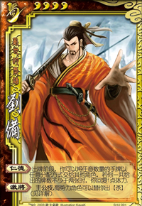 | 刘备 | 4 | 仁德：出牌阶段，可以将任意数量的手牌以任意分配方式交给其他角色，若给出的牌张数不少于两张时，回复1点体力。分出的牌，对方无法拒绝。
激将：主公技，当玩家需要使用（或打出）一张【杀】时，可以发动激将。所有蜀势力角色按行动顺序依次选择是否“提供”打出一张【杀】，直到有一名角色或没有任何角色决定如此作时为止。 |
| 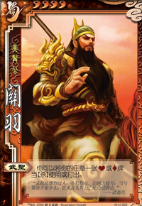 | 关羽 | 4 | 武圣：可以将任意一张红色牌当【杀】使用或打出。 若同时用到当前装备的红色装备效果时，不可把这张装备牌当【杀】来使用或打出。 |
| 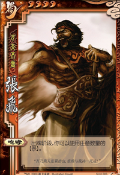 | 张飞 | 4 | 咆哮：出牌阶段，可以使用任意数量的【杀】。 |
| 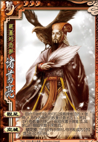 | 诸葛亮 | 3 | 观星：回合开始阶段，可以观看牌堆顶的X张牌（X为存活角色的数量且最多为5），将其中任意数量的牌以任意顺序置于牌堆顶，其余以任意顺序置于牌堆底。
空城：锁定技，当没有手牌时，不能成为【杀】或【决斗】的目标。当你在“决斗”过程中没有手牌无法打出【杀】时，仍然会受到【决斗】的伤害。 |
| 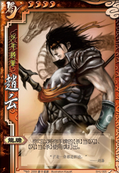 | 赵云 | 4 | 龙胆：可以将手牌的【杀】当【闪】、【闪】当【杀】使用或打出。 |
| 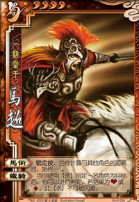 | 马超 | 4 | 马术：锁定技，始终可视为装备有一匹-1马。马术的效果与装备－1马时效果一样，但仍然可以装备一匹－1马。
铁骑：当使用【杀】指定一名角色为目标后，可以进行判定，若结果为红色，此【杀】不可被闪避。 |
| 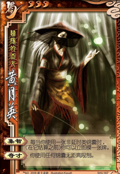 | 黄月英 | 3 | 集智：每当使用一张非延时类锦囊时，（在它结算之前）可以立即摸一张牌。
奇才：使用任何锦囊无距离限制。 |
| 图示 | 角色 | 体力 | 技能 |
| 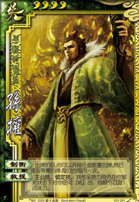 | 孙权 | 4 | 制衡：出牌阶段，可以弃掉任意数量的牌,然后摸取等量的牌，每回合限用一次。
救援：主公技，锁定技，其他吴势力角色在濒死状态下使用【桃】时，额外回复1点体力。 |
| 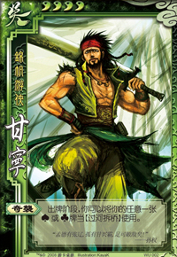 | 甘宁 | 4 | 奇袭：出牌阶段，可以将任意黑色牌当【过河拆桥】使用。 |
| 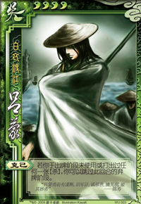 | 吕蒙 | 4 | 克己：若于出牌阶段未使用或打出过任何一张【杀】，可以跳过此回合的弃牌阶段。类换言之，此回合手牌无上限。 |
| 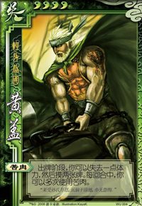 | 黄盖 | 4 | 苦肉：出牌阶段，可以失去一点体力，然后摸两张牌。每回合中，可以多次使用苦肉。 当失去最后一点体力时，优先结算濒死事件，当被救活后，才可以摸两张牌。换言之，可以用此技能自杀。 |
| 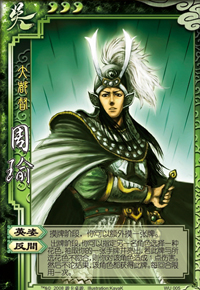 | 周瑜 | 3 | 英姿：摸牌阶段，可以额外摸一张牌。 反间：出牌阶段，可以令另一名角色选择一种花色，抽取一张手牌并亮出，若此牌与所选花色不吻合，则对该角色造成1点伤害。然后不论结果，该角色都获得此牌。每回合限用一次。 |
| 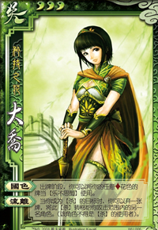 | 大乔 | 3 | 国色：出牌阶段，可以将任意方块花色的牌当【乐不思蜀】使用。 流离：当成为【杀】的目标时，可以弃一张牌，并将此【杀】转移给攻击范围内的另一名角色。（该角色不得是【杀】的使用者） |
| 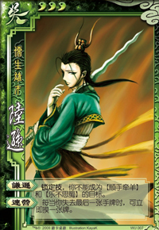 | 陆逊 | 3 | 谦逊：锁定技，不能成为【顺手牵羊】和【乐不思蜀】的目标。 连营：每当失去最后一张手牌时，可立即摸一张牌。 |
| 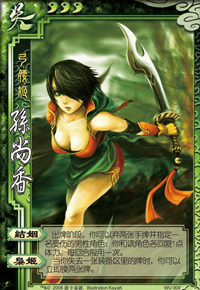 | 孙尚香 | 3 | 结姻：出牌阶段，可以弃两张手牌并选择一名受伤的男性角色：和目标角色各回复1点体力。每回合限用一次。
使用结姻的条件是“有受伤的男性角色”，与自己是否受伤无关。 枭姬：当失去一张装备区里的牌时，可以立即摸两张牌。 例如这些时机：受到【顺手牵羊】、【过河拆桥】等锦囊的影响以及自己替换装备时。 |
| 图示 | 角色 | 体力 | 技能 |
| 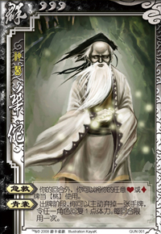 | 华佗 | 1 | 急救：除自己的回合外，可以将任意红色牌当【桃】使用。 青囊：出牌阶段，可以主动弃掉一张手牌，令任一目标角色回复1点体力。每回合限用一次。 |
| 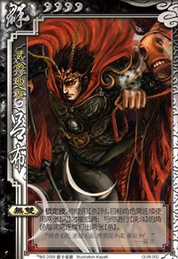 | 吕布 | 1 | 无双：锁定技，使用【杀】时，目标角色需连续使用两张【闪】才能抵消；进行【决斗】的角色每次需连续打出两张【杀】。若对方只有一张【闪】或【杀】则即便使用（打出）了也无效。 |
| 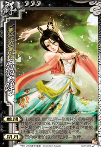 | 貂蝉 | 1 | 离间：出牌阶段，可以弃一张牌并选择两名男性角色。若如此作，视为其中一名男性角色对另一名男性角色使用一张【决斗】。额外的，此【决斗】不能被【无懈可击】响应。每回合限用一次。使用离间时，决定是由哪个角色对另一个角色使用【决斗】。
闭月：回合结束阶段，可以摸一张牌。 |